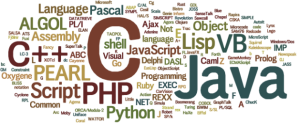

< < < Back
Do You Want To Learn How To Code? – Return Of Kings
Three years ago when I became a college freshman, I had a certain plan in mind: become a business major, specifically accounting. After graduating, I would get my CPA, and work for three years wasting my life as a public accountant, until I would find a nice 9-5 job, a wife, and a suburban home like many beta males of this day and age.
As I progressed through college, this mindset slowly chipped away, and I began to stop taking advice of other people who thought they knew what was best for me. This eventually landed me into quantitative economics, specifically econometrics. Econometrics is basically the data analysis branch of economics, and in my econometrics courses, I learned my first programming language: Stata.
Ever since then I have fallen in love with programming. Because I have been programming for two years now, and because I am an individual who stresses perpetual self-improvement, I would like to share with the ROK community my thoughts on how you should start programming.
This article is more geared towards an individual who has little to no programming experience, and would be interested in learning. This post has a slightly different focus than Hawk Writes’s excellent article An Insider’s Guide To The Masculine Profession Of Software Development, since I will give you a how-to for web design, and a how-to for geting your feet wet in programming before you begin a specialization like software development. If you are still interested, let’s begin.
You should understand this picture after your first day of coding in HTML.
Your First Language
Even though I personally started with a more esoteric programming language confined to economics departments, the first language I advise people to learn is HTML. Out of all the languages that have been developed, HTML is one of if not the easiest language to learn.
Some would argue that learning a language such as Java first would be better because it gives individuals less leeway to stray away from programming conventions due to strict rules within the language. I disagree with this—when we are taught multiplication, teachers use a “x” sign that denotes multiplication. They do not immediately tell us that *, x , ()() , & • are all multiplication signs, and tell us the conventions of when each individual sign is appropriate in the mathematics field. This is because, just like mathematics, coding takes a lot of effort and a long time to build up your skills. There is more of a chance of someone who is new to programming being able to beat the HTML learning curve at their first go compared to beating the Java learning curve.
To start learning HTML, I advise you to spend one hour a day at first. I personally learned HTML and CSS from Codeacademy. It is free, very easy to move through the lessons, and within the lesson they give you a set of code to work on along with showing you the effects of your code on the side screen, which gives you a great feel for how each individual tweak in the code changes the overall effect of the webpage.
Another good site that you can practically learn anything from is Lynda. It isn’t free but it does have a lot more content than code academy. I choose code academy over Lynda primarily due to the aesthetic qualities of the learning experience on code academy.
The order in which I learned HTML on code academy was the “HTML & CSS” course under language skills, followed by the “Make a Website” course under web developer skills. Following these two completed courses I finished off the HTML/CSS section with the “About You” goal; however, unless you want to repeat the course one or twice over, this is not enough content to really teach you how to code in HTML & CSS.
The way I boosted my content was by buying the HTML5 and CSS3 For Dummies book on Amazon as a reference guide. This will come in handy in your learning and will serve as a great reference for many years to come. In addition, I began to play with my own HTML and CSS on one of the many free domain sites. The site I used was http://www.geocities.ws/. The membership is free, and it is relatively easy to use. Just upload a notepad or text edit file (change the ending to .html or .css depending on the language you are using).
Even though I did it differently, I would suggest first glancing over what you are going to learn on code academy for the day (stick to around 1 lesson), read about it in the HTML/CSS book, do the code academy portion of your learning, and then try to implement it into your own webpage. Implementing what you learned into your own webpage has really helped my learning with the extra reinforcement and being able to immediately apply what I have learned gives me a great feeling of satisfaction.
HTML and CSS will probably take a few months to learn properly, and can change drastically depending on how much time you spend a day on learning your new skill.
The options are practically endless.
Where to go from there
After feeling very comfortable with HTML and CSS, the next language I would move on to would be Javascript, PHP, and jQuery, in that order. This is because if you have followed my advice up to this point, you already have a good habit where you are reading the HTML & CSS book (Javascript, PHP, and jQuery sections are also included in the previously linked book), doing code academy (there are lesson on code academy for Javascript, PHP, and jQuery, including a lot more content for these languages if you do the API lessons), and working on your own website (all these languages are in the field of web design).
If you finish code academy, finish the HTML and CSS book, and continually progress in developing your own webpage, you will have five programming languages under your belt, and have a skillset that is incredibly valuable to a potential employer.
Following learning these languages, you could buy a new books as supplementary and move on in code academy to learn Python and Ruby. If you were to move on to an harder language like Java and get flustered, I would suggest moving back to Python or Ruby, and continually learning the next hardest programming language that fits your skillset; however, you will most likely be comfortable with coding and will be easily able to branch into any other coding field you wish to.
You could go down my route of data analysis, learning Stata, R, and SAS; you could become an algorithmic trader by learning C++, or you could learn Perl and pull massive amounts of data off any given website. At this level, however, I would suggest learning some of the more advanced languages by taking courses at the local community college or university.
From personal experience in the matter, the harder the languages get, it is always best to have someone teaching you who has been around the block a few times and can teach you the conventions of the language. If you do get a specialization you wish to utilize in the real world, you will want to have great coding mannerisms for each language you learn, which get tougher to perfect as the languages get harder.
Where I would have been without programming.
Conclusion
If you follow this guide, I can assure you that you will become good at coding, and have picked up a skill that is useful in entrepreneurship, school, and good to put on a resume. Even if the skillset doesn’t directly apply to your life, I have learned self-improvement requires keeping your brain nimble, which requires you to learn new skills and methodologies constantly.
I know without taking the chance to learn how to code, I probably would have been sitting in some auditing class right now contemplating suicide or living out the rest of my life as a perpetually-depressed white knight CPA. Always remember that there are other paths.
Read More: This May Be The Fastest Way To Learn A Language


{kind=link}
{kind=link}
{kind=link}